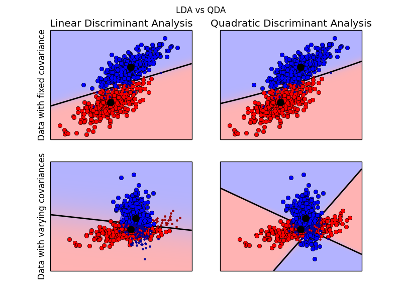

Linear and Quadratic Discriminant Analysis with confidence ellipsoid¶
Plot the confidence ellipsoids of each class and decision boundary
Python source code: plot_lda_qda.py
print(__doc__)
from scipy import linalg
import numpy as np
import pylab as pl
import matplotlib as mpl
from matplotlib import colors
from sklearn.lda import LDA
from sklearn.qda import QDA
###############################################################################
# colormap
cmap = colors.LinearSegmentedColormap(
'red_blue_classes',
{'red': [(0, 1, 1), (1, 0.7, 0.7)],
'green': [(0, 0.7, 0.7), (1, 0.7, 0.7)],
'blue': [(0, 0.7, 0.7), (1, 1, 1)]})
pl.cm.register_cmap(cmap=cmap)
###############################################################################
# generate datasets
def dataset_fixed_cov():
'''Generate 2 Gaussians samples with the same covariance matrix'''
n, dim = 300, 2
np.random.seed(0)
C = np.array([[0., -0.23], [0.83, .23]])
X = np.r_[np.dot(np.random.randn(n, dim), C),
np.dot(np.random.randn(n, dim), C) + np.array([1, 1])]
y = np.hstack((np.zeros(n), np.ones(n)))
return X, y
def dataset_cov():
'''Generate 2 Gaussians samples with different covariance matrices'''
n, dim = 300, 2
np.random.seed(0)
C = np.array([[0., -1.], [2.5, .7]]) * 2.
X = np.r_[np.dot(np.random.randn(n, dim), C),
np.dot(np.random.randn(n, dim), C.T) + np.array([1, 4])]
y = np.hstack((np.zeros(n), np.ones(n)))
return X, y
###############################################################################
# plot functions
def plot_data(lda, X, y, y_pred, fig_index):
splot = pl.subplot(2, 2, fig_index)
if fig_index == 1:
pl.title('Linear Discriminant Analysis')
pl.ylabel('Data with fixed covariance')
elif fig_index == 2:
pl.title('Quadratic Discriminant Analysis')
elif fig_index == 3:
pl.ylabel('Data with varying covariances')
tp = (y == y_pred) # True Positive
tp0, tp1 = tp[y == 0], tp[y == 1]
X0, X1 = X[y == 0], X[y == 1]
X0_tp, X0_fp = X0[tp0], X0[~tp0]
X1_tp, X1_fp = X1[tp1], X1[~tp1]
xmin, xmax = X[:, 0].min(), X[:, 0].max()
ymin, ymax = X[:, 1].min(), X[:, 1].max()
# class 0: dots
pl.plot(X0_tp[:, 0], X0_tp[:, 1], 'o', color='red')
pl.plot(X0_fp[:, 0], X0_fp[:, 1], '.', color='#990000') # dark red
# class 1: dots
pl.plot(X1_tp[:, 0], X1_tp[:, 1], 'o', color='blue')
pl.plot(X1_fp[:, 0], X1_fp[:, 1], '.', color='#000099') # dark blue
# class 0 and 1 : areas
nx, ny = 200, 100
x_min, x_max = pl.xlim()
y_min, y_max = pl.ylim()
xx, yy = np.meshgrid(np.linspace(x_min, x_max, nx),
np.linspace(y_min, y_max, ny))
Z = lda.predict_proba(np.c_[xx.ravel(), yy.ravel()])
Z = Z[:, 1].reshape(xx.shape)
pl.pcolormesh(xx, yy, Z, cmap='red_blue_classes',
norm=colors.Normalize(0., 1.))
pl.contour(xx, yy, Z, [0.5], linewidths=2., colors='k')
# means
pl.plot(lda.means_[0][0], lda.means_[0][1],
'o', color='black', markersize=10)
pl.plot(lda.means_[1][0], lda.means_[1][1],
'o', color='black', markersize=10)
return splot
def plot_ellipse(splot, mean, cov, color):
v, w = linalg.eigh(cov)
u = w[0] / linalg.norm(w[0])
angle = np.arctan(u[1] / u[0])
angle = 180 * angle / np.pi # convert to degrees
# filled gaussian at 2 standard deviation
ell = mpl.patches.Ellipse(mean, 2 * v[0] ** 0.5, 2 * v[1] ** 0.5,
180 + angle, color=color)
ell.set_clip_box(splot.bbox)
ell.set_alpha(0.5)
splot.add_artist(ell)
splot.set_xticks(())
splot.set_yticks(())
def plot_lda_cov(lda, splot):
plot_ellipse(splot, lda.means_[0], lda.covariance_, 'red')
plot_ellipse(splot, lda.means_[1], lda.covariance_, 'blue')
def plot_qda_cov(qda, splot):
plot_ellipse(splot, qda.means_[0], qda.covariances_[0], 'red')
plot_ellipse(splot, qda.means_[1], qda.covariances_[1], 'blue')
###############################################################################
for i, (X, y) in enumerate([dataset_fixed_cov(), dataset_cov()]):
# LDA
lda = LDA()
y_pred = lda.fit(X, y, store_covariance=True).predict(X)
splot = plot_data(lda, X, y, y_pred, fig_index=2 * i + 1)
plot_lda_cov(lda, splot)
pl.axis('tight')
# QDA
qda = QDA()
y_pred = qda.fit(X, y, store_covariances=True).predict(X)
splot = plot_data(qda, X, y, y_pred, fig_index=2 * i + 2)
plot_qda_cov(qda, splot)
pl.axis('tight')
pl.suptitle('LDA vs QDA')
pl.show()
Total running time of the example: 0.43 seconds ( 0 minutes 0.43 seconds)